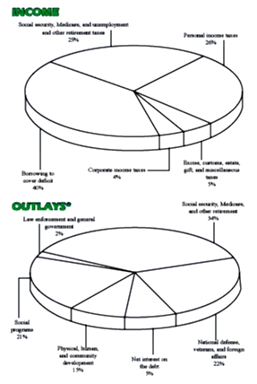
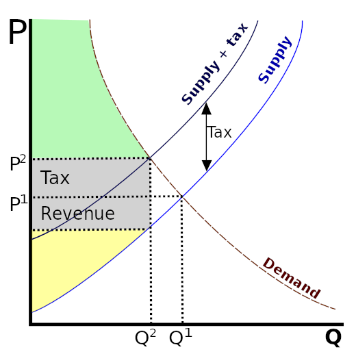
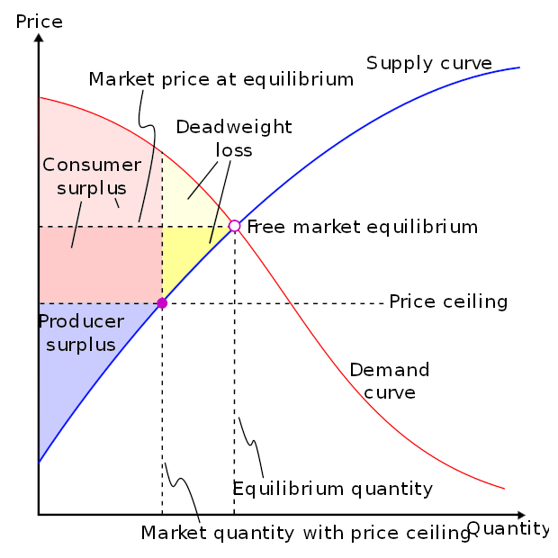
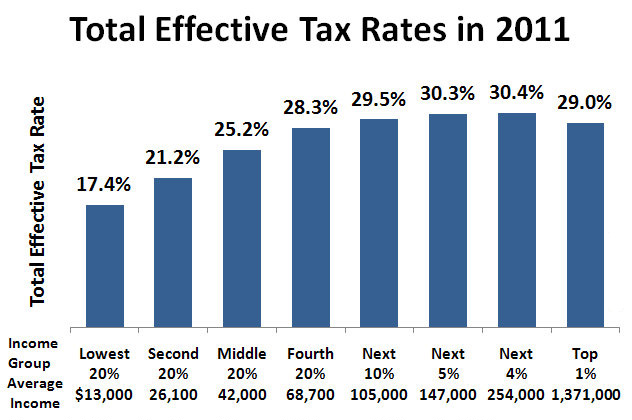
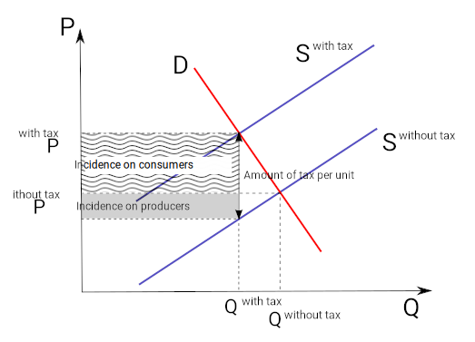
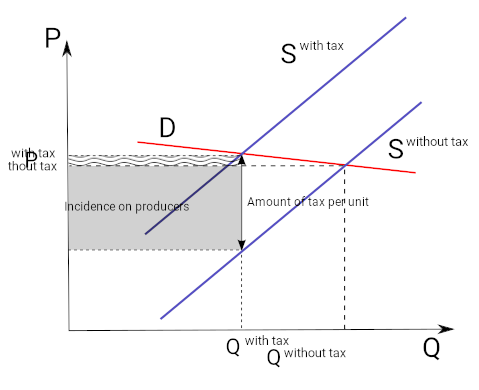
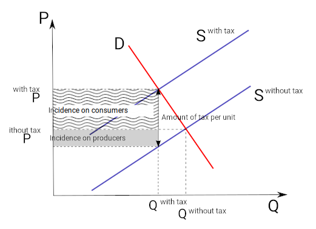
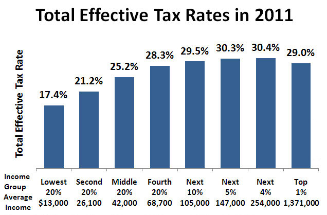

On a general level, tax collections provide a revenue source to support the outlays or primary activities of a government.
Explain the role of taxation with respect to consumer and firm behavior
Taxes are the primary source of revenue for most governments. They are simply defined as a charge or fee on income or commerce. Taxes are most readily understood from the perspective of income taxes or sales tax, although there are many other types of taxes levied on both individuals and firms.
Necessarily, taxes raise the price of purchasing the good or resource for firms and consumers. As a result, the quantity demanded and supplied reacts according to the supply and demand curves.
In the United States, Congress has the power to tax as stated in The United States Constitution, Article 1, Section 8, Clause 1: "The Congress shall have the Power to lay and collect Taxes, Duties, Imposts, and Excises to pay the Debts and provide for the common Defense and general Welfare of the United States. " This power was reinforced in the Sixteenth Amendment to the Constitution: "The Congress shall have the power to lay and collect taxes on income, from whatever source derived, without apportionment among the several States, and without regard to any census or enumeration."
It is important to note that Congress has delegated to the Internal Revenue Service (IRS) the responsibility of administering the tax laws, known as the Internal Revenue Code (the Code). Congress enacts these tax laws, and the IRS enforces them. Individual states also have the power to tax as do smaller government entities such as towns, cities, counties, and municipalities.
On a general level, tax collections provide a revenue source to support the outlays or primary activities of a government including but not limited to public buildings, military, national parks, and public welfare in the form of transfer payments. Taxes allow the government to perform and provide services that would not evolve naturally through a free market mechanism, for example, public parks. However, governments also use taxes to establish income equity and modify consumption decisions .
Tax revenue is used by the government to support services and activities available to all residents.
Governments use different kinds of taxes and vary the tax rates. This is done to distribute the tax burden among individuals or classes of the population involved in taxable activities, such as business, or to redistribute resources between individuals or classes in the population. This type of taxation is referred to as progressive taxation because the tax liability increases in proportion to income.
Sales taxes are borne by the consumer when s/he purchases certain goods. It is an ad valorem tax: the charged value is based on the value of what is being sold. This is in contrast to an excise tax, where the charged value is based on the number of items being sold.
Sales tax is a form of regressive taxation; the liability is based on the percentage of income consumed, which is higher for low income earners. As a result, individuals earning a relatively lower income will pay a higher proportion of income in the form of sales tax, defining the regressive nature of the tax. Though a general revenue source, sales taxes are also used to modify behavior. For example taxes on cigarettes are meant to dissuade purchase due to the inherent health implications of smoking.
In economics, deadweight loss is a loss of economic efficiency that can occur when equilibrium for a good or service is not Pareto optimal.
Discuss how taxes create deadweight loss
In economics, a deadweight loss (also known as excess burden or allocative inefficiency) is a loss of economic efficiency that can occur when equilibrium for a good or service is not Pareto optimal (resource allocation where it is impossible to make any one individual better off without making at least one individual worse off). Causes of deadweight loss can include actions that prevent the market from achieving an equilibrium clearing condition (where supply and demand are equal) and include taxes or subsidies and binding price ceilings or floors (including minimum wages). Deadweight loss can generally be referenced as a loss of surplus to either the consumer, producer, or both.
Harberger's triangle, generally attributed to Arnold Harberger, refers to the deadweight loss (as measured on a supply and demand graph) associated with government intervention in a perfect market . This can happen through price floors, caps, taxes, tariffs, or quotas. In the case of a tax on the supplier of a good, the supply curve will shift inward in proportion to the tax and resulting in a non-market clearing level of supply. As a result, the price of the good increases and the quantity available decreases .
Taxation can be evaluated as a non-market cost. In this case imposition of taxes reduces supply, resulting in the creation of deadweight loss (triangle bounded by the demand curve and the vertical line representing the after-tax quantity supplied), similar to a binding constraint.
Deadweight loss, represented by Harberger's triangle, is the yellow triangle. It represents lost efficiency.
The area represented by the Harberger's triangle results from the intersection of the supply and demand curves above market equilibrium resulting in a reduction in consumer surplus and producer surplus relative to their value before the imposition of the tax. The loss of the surplus, not recouped by tax revenues, is deadweight loss.
Some economists have argued that these triangles do not have a huge impact on the economy, whereas others maintain that they can seriously affect long term economic trends by pivoting the trend downwards, causing a magnification of losses in the long run.
Tax laws are passed by Congress and enforced by the Internal Revenue Service (IRS) at the federal level.
Discuss the United States taxation process and the legislature involved
There are three levels of government in the United States: the federal government, state governments, and local governments. Each has its own authority to tax. For example, states can set their own sales and payroll taxes that apply only within the state. Similarly, local governments can impose a variety of taxes, such as property taxes. Since the taxation process varies on the state and local level, we will focus on the federal level.
Federal taxes are created by the US Congress, which passes laws mandating what is taxed and the amount of the tax. One of the most well-known taxes, the federal income tax, wasn't created until the passage of the 16th amendment in 1913 explicitly gave the US Congress the authority to tax income. Congress then takes the tax revenue and apportions it through its power to create and manage the federal budget.
Congress is not the body, however, that actually collects taxes. That duty is charged to the Internal Revenue Service (IRS), a part of the Department of the Treasury. The IRS is responsible for ensuring that companies and individuals pay the taxes they are legally obligated to .
The IRS is responsible for interpreting and enforcing tax legislation passed by Congress. The IRS taxes only realized returns, though financial reports must also include unrealized returns on the balance sheet.
The IRS also has some power in determining exactly how the tax laws passed by Congress are interpreted and enforced. For example, Congress may say that depreciation will be an allowable expense "in accordance with regulations to be established by the IRS. " This allows the IRS to articulate the conditions under which depreciation is considered an allowable expense. At the same time, the IRS must also interpret the laws passed by Congress to determine what the law was intended to mean for a given organization or individual.
As would be expected with any law or interpretation of a law by a government body, there are disputes. Disputes over tax rules are generally heard in the United States Tax Court before the tax is paid, or in a United States District Court or United States Court of Federal Claims after the tax is paid. Tax laws are treated like any other piece of legislation in that there is a judicial process for resolving disputes.
Taxes can be evaluated based on an average impact or a marginal impact and can be categorized as progressive, regressive, or proportional.
Calculate the average tax rate and marginal tax rate
An average tax rate is the ratio of the total amount of taxes paid, T, to the total tax base, P, (taxable income or spending), expressed as a percentage. If a company pays different rates on the first \$100,000 in earning than the next \$100,000, it will sum up the total tax paid and divide it by \$200,000 to calculate the average tax rate.
T/P = average tax rate
The marginal tax rate is sometimes defined as the tax rate that applies to the last (or next) unit of the tax base (taxable income or spending), it is in effect, the tax percentage on the highest dollar earned. For example, if a company pays 5% tax on its first \$100,000 earned, and 10% on the next \$100,000, the marginal tax rate of earning the \$101,000th dollar is 10%.
Broadly, the marginal tax rate equals the change in taxes, divided by the change in tax base, expressed as a percentage.
change in T/change in P = marginal tax rate
A progressive tax is a tax in which the tax rate increases as the taxable base amount increases . The term "progressive" describes a distribution effect on income or expenditure, referring to the way the rate progresses from low to high, where the average tax rate is less than the marginal tax rate. The term can be applied to individual taxes or to a tax system as a whole; a year, multi-year, or lifetime. Progressive taxes are imposed in an attempt to reduce the tax incidence of people with a lower ability-to-pay, as such taxes shift the incidence increasingly to those with a higher ability-to-pay. The opposite of a progressive tax is a regressive tax, where the relative tax rate or burden increases as an individual's ability to pay it decreases.
Graph demonstrates a progressive tax distribution on income that becomes regressive for top earners.
A regressive tax is a tax imposed in such a manner that the average tax rate decreases as the amount subject to taxation increases . "Regressive" describes a distribution effect on income or expenditure, referring to the way the rate progresses from high to low, where the average tax rate exceeds the marginal tax rate. In terms of individual income and wealth, a regressive tax imposes a greater burden (relative to resources) on the poor than on the rich — there is an inverse relationship between the tax rate and the taxpayer's ability to pay as measured by assets, consumption, or income.
A proportional tax is a tax imposed so that the tax rate is fixed, with no change as the taxable base amount increases or decreases. The amount of the tax is in proportion to the amount subject to taxation. "Proportional" describes a distribution effect on income or expenditure, referring to the way the rate remains consistent (does not progress from "low to high" or "high to low" as income or consumption changes), where the marginal tax rate is equal to the average tax rate.
Tax incidence is the analysis of the effect of a particular tax on the distribution of economic welfare.
Identify who bears the tax burden in various scenarios
In economics, tax incidence is the analysis of the effect of a particular tax on the distribution of economic welfare. Tax incidence is said to "fall" upon the group that ultimately bears the burden of, or ultimately has to pay, the tax. The key concept is that the tax incidence or tax burden does not depend on where the revenue is collected, but on the price elasticity of demand and price elasticity of supply.
Tax incidence does not consider the concept of tax efficiency or the excess burden of taxation, also known as the distortionary cost or deadweight loss of taxation, is one of the economic losses that society suffers as the result of a tax. For example, United States Social Security payroll taxes are paid half by the employee and half by the employer. However, some economists think that the worker is bearing almost the entire burden of the tax because the employer passes the tax on in the form of lower wages. The tax incidence is thus said to fall on the employee and due to the need for workers for a particular job, the tax burden also falls, in this case, on the worker.
Imagine a \$1 tax on every barrel of apples an apple farmer produces. If the product (apples) is price inelastic to the consumer (whereby if price rose, a small demand loss would be accounted for by the extra revenue), the farmer is able to pass the entire tax on to consumers of apples by raising the price by \$1. In this example, consumers bear the entire burden of the tax; the tax incidence falls on consumers. On the other hand, if the apple farmer is unable to raise prices because the product is price elastic (if prices rose, more demand would be lost than extra revenue gained), the farmer has to bear the burden of the tax or face decreased revenues: the tax incidence falls on the farmer. If the apple farmer can raise prices by an amount less than \$1, then consumers and the farmer are sharing the tax burden. When the tax incidence falls on the farmer, this burden will typically flow back to owners of the relevant factors of production, including agricultural land and employee wages .
The imposition of a tax can result in a reduction to both consumer and producer surplus relative to the pre-tax scenario.
Where the tax incidence falls depends (in the short run) on the price elasticity of demand and price elasticity of supply. Tax incidence falls mostly upon the group that responds least to price (the group that has the most inelastic price-quantity curve). If the demand curve is inelastic relative to the supply curve the tax will be disproportionately borne by the buyer rather than the seller. If the demand curve is elastic relative to the supply curve, the tax will be borne disproportionately by the seller.
In the example provided, the tax burden falls disproportionately on the party exhibiting relatively more inelasticity in the situation. This characteristic results in a reduction of the ability of the party to participate in the market to the level of willingness that would have been present in the absence of the tax. The loss is conceptually defined as a loss of surplus and the loss of surplus is characterized as deadweight loss. Policy makers evaluate the surplus and deadweight loss in relation to the imposition of a tax in order to better evaluate the efficiency of a tax or the distortion that the imposed tax causes on the attainment of market equilibrium.
Policymakers must consider the predicted tax incidence when creating them. If taxes fall on an unintended party, it may not achieve its intended objective and may not be fair.
Tax incidence or tax burden does not depend on where the revenue is collected, but on the price elasticity of demand and price elasticity of supply.
Explain how elasticity influences the relative tax burden between suppliers and consumers (demand).
Tax incidence refers to who ultimately pays the tax, the producer or consumer, and the resulting societal effect.. Tax incidence is said to "fall" upon the group that ultimately bears the burden of, or ultimately has to pay, the tax. The key concept is that the tax incidence or tax burden does not depend on where the revenue is collected, but on the price elasticity of demand and price elasticity of supply.
If a producer is inelastic, he will produce the same quantity no matter what the price. If the consumer is elastic, the consumer is very sensitive to price. A small increase in price leads to a large drop in the quantity demanded .
In a scenario with inelastic supply and elastic demand, the tax burden falls disproportionately on suppliers.
The imposition of the tax causes the market price to increase from P without tax to P with tax and the quantity demanded to fall from Q without tax to Q with tax. Because the consumer is elastic, the quantity change is significant. Because the producer is inelastic, the price does not change much. The producer is unable to pass the tax onto the consumer and the tax incidence falls on the producer. In this example, the tax is collected from the producer and the producer bears the tax burden.
In most markets, elasticities of supply and demand are fairly similar in the short-run, as a result the burden of an imposed tax is shared between the two groups albeit in varying proportions .
When a tax is imposed in a scenario where demand and supply exhibit similar elasticities, the tax burden is shared.
In general, the tax burden will be greater for the group exhibiting the greater relative inelasticity.
Taxes may be considered equitable if they are administered in accordance with the definition of either horizontal or vertical equity.
Explain tax equity in relation to the progressive, proportional, and regressive nature of taxes.
In public finance, horizontal equity conforms to the concept that people with a similar ability to pay taxes should pay the same or similar amounts. It is related to tax neutrality or the idea that the tax system should not discriminate between similar things or people, or unduly distort behavior. Vertical equity usually refers to the idea that people with a greater ability to pay taxes should pay more.
Income taxes are a laddered progressive tax where income tax rates are set in income bands or ranges. Each tax rate corresponds to a particular income range; income above a tax range is subject to a higher tax rate that corresponds to a higher income range and income below a specific range is subject to a lower tax rate, similarly identified with a lower income range. Within any given income range, the tax rate is the same.
The income range conforms with the idea that the individuals included within it are similar with respect to their ability to pay. The range can be identified as conforming to the concept of horizontal equity. Vertical equity follows from the laddering of income tax to progressively higher rates. The laddering of income taxes conforms to the underlying definition of vertical equity, as those who have a greater ability to pay tax, pay a higher proportion of their income.
Proportional taxes, conform to horizontal equity. By definition proportional taxes are levied in proportion to income. However, income taxes are only proportional within specific income ranges. At the highest income tax rate, income taxes can become regressive, since high earners are only subject to a constant albeit highest rate on their income. For example, income from \$500,000 and above will be subject to the same rate, making the overall tax burden as a proportion of income higher for the individuals on the starting point of the range .
Income tax is a progressive tax that assumes a regressive nature at the highest tax rate.
The purpose of a progressive tax system is to increase the tax burden to those most able to pay. However, some policy makers believe that progressive taxation is an overall inefficiency within the tax structure. These individuals and groups support a flat tax or proportional tax instead. Their argument for a tax modification is related to the view that increasing the tax rate in conjunction with income creates a disincentive to individuals to earn more and is, as a result, punitive to those that achieve income related success. The net result from this reasoning is that progressive taxation results in lower GDP than would have resulted in a proportional tax regime, also referred to as a loss of economic efficiency.
Taxes are the primary source of government revenue.
Identify the basis for taxation.
Taxation is the central part of modern public finance. The importance of taxation arises from the fact that it is by far the most significant source of government revenue and is therefore the primary means of financing government expenditures .
In the United States the Internal Revenue Service is the regulatory authority empowered by Congress to collect taxes.
Due to the pervasive nature of taxation, taxes can be used as an instrument of attaining certain social objectives. For example, income taxes due to their progressive nature are used to equitably derive revenue by differentiating tax rates by income strata. The income derived in this manner is then used to transfer income to lower income groups, thereby, reducing inequalities related to income and wealth.
Taxation is also used as part of fiscal policy to stabilize the economy. Increasing taxes can reduce consumption and lead to economic slowing when the economy may be growing too quickly. Alternatively, decreasing taxes can be a mechanism to promote economic growth by increasing the funds available for consumption and investment spending. It is important to note that when the government spends more than the tax revenue it collects, the government is operating at a deficit and will have to borrow funds to finance operations until taxes can be increased to return the government spending to a balanced budget.
The US government imposes a number of different types of taxes in order to finance its operations. The following is a list of taxes in common use by governmental authorities:
Taxes are the primary source of revenue for state and local governments; income, property, and sales taxes are common examples of state and local taxes.
Give an example of federal, state, and local taxes
Taxes are important to federal, state, and local governments. They are the primary source of revenue for the corresponding level of government and fund the activities of the governmental entity. For example, on a local level, taxes fund the provision of common services, such as police or fire department, and the maintenance of common areas, such as public parks . On a state level, taxes fund the school systems, including state universities. On a federal level, taxes are used to fund government activities such as the provision of welfare and transfer payments to redistribute income.
State parks like Pearl Hill, located in Townsend, Massachusetts, rely on tax revenue for support and maintenance.
Income taxes are taxes imposed on the net income of individuals and corporations by the federal, most state, and some local governments. State and local income tax rates vary widely by jurisdiction and many are graduated, or increase progressively as income levels increase. State taxes are generally treated as a deductible expense for federal tax computation.
Sales taxes are imposed by most states on the retail sale price of many goods and some services. Sales tax rates also vary widely among jurisdictions, from 0% to 16%, and may vary within a jurisdiction based on the particular goods or services taxed. Sales tax is collected by the seller at the time of sale, or remitted as use tax by buyers of taxable items who did not pay sales tax.
Property taxes are imposed by most local governments and many special purpose authorities based on the fair market value of property. Property tax is generally imposed only on real estate, though some jurisdictions tax some forms of business property. Property tax rules and rates vary widely.
Many countries impose taxes on a company's earnings along with aspects of doing business. Two examples of these are corporate and payroll taxes.
Give examples of corporate and payroll taxes
Many countries impose a corporate tax, also called corporation tax or company tax, on the income or capital of some types of legal entities. A similar tax may be imposed at state or lower levels. The taxes may also be referred to as income tax or capital tax. Most countries tax all corporations doing business in the country on income from that country. Many countries tax all income of corporations organized in the country. Company income subject to taxation is often determined much like taxable income for individuals. Generally, the tax is imposed on net profits. In some jurisdictions, rules for taxing companies may differ significantly from rules for taxing individuals.
Net taxable income for corporate tax is generally financial statement income. The rate of tax varies by jurisdiction; however, most companies provide or make public the effective tax rate on the income earned. The effective tax rate is the average corporate tax rate on the company's income and this takes into consideration tax benefits included in a current tax year.
Corporations are also subject to a variety of other taxes including: property tax, payroll tax, excise tax, customs tax and value-added tax along with other common taxes, generally in the same manner as other taxpayers. These, however, are rarely referred to as "corporate taxes" .
Corporations, such as CBS, whose headquarters are pictured above, are subject to multiple forms of tax, from corporate income tax to payroll taxes.
Payroll taxes are taxes that employers are required to pay when they pay salaries to their staff. Payroll taxes generally fall into two categories: deductions from an employee's wages, and taxes paid by the employer based on the employee's wages.
In the United States, payroll taxes are assessed by the federal government, all fifty states, the District of Columbia, and numerous cities. These taxes are imposed on employers and employees and on various compensation bases and are collected and paid to the taxing jurisdiction by the employers. Most jurisdictions imposing payroll taxes require reporting quarterly and annually in most cases, and electronic reporting is generally required for all but small employers.
{kind=link}
{kind=link}
{kind=link}
{kind=link}
{kind=link}
{kind=link}
{kind=link}
{kind=link}
{kind=link}